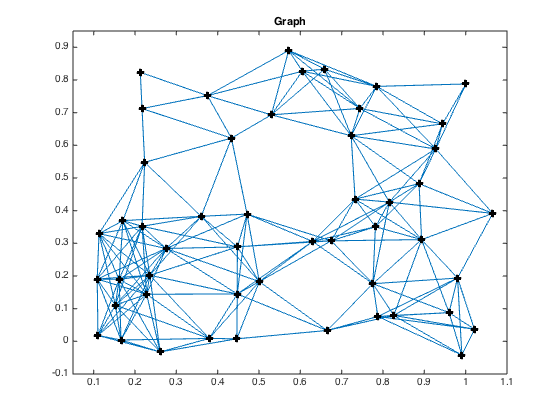
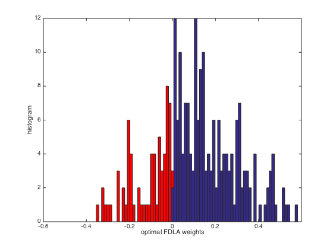
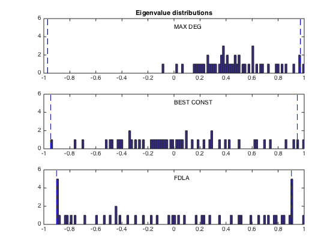
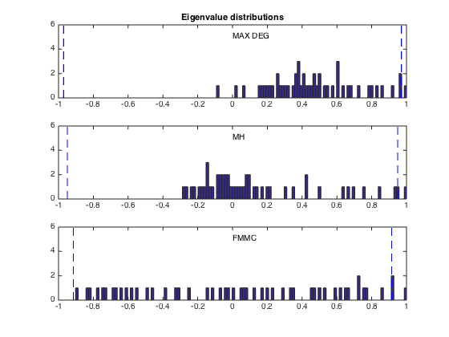
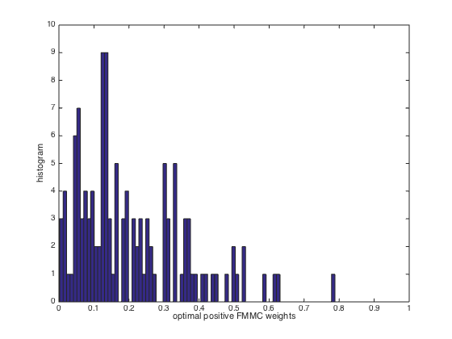
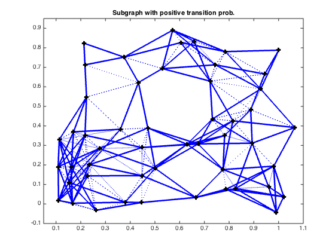

% S. Boyd, et. al., "Convex Optimization of Graph Laplacian Eigenvalues" % ICM'06 talk examples (www.stanford.edu/~boyd/cvx_opt_graph_lapl_eigs.html) % Written for CVX by Almir Mutapcic 08/29/06 % (figures are generated) % % In this example we consider a graph described by the incidence matrix A. % Each edge has a weight W_i, and we optimize various functions of the % edge weights as described in the referenced paper; in particular, % % - the fastest distributed linear averaging (FDLA) problem (fdla.m) % - the fastest mixing Markov chain (FMMC) problem (fmmc.m) % % Then we compare these solutions to the heuristics listed below: % % - maximum-degree heuristic (max_deg.m) % - constant weights that yield fastest averaging (best_const.m) % - Metropolis-Hastings heuristic (mh.m) % randomly generate a graph with 50 nodes and 200 edges % and make it pretty for plotting n = 50; threshold = 0.2529; rand('state',209); xy = rand(n,2); angle = 10*pi/180; Rotate = [ cos(angle) sin(angle); -sin(angle) cos(angle) ]; xy = (Rotate*xy')'; Dist = zeros(n,n); for i=1:(n-1); for j=i+1:n; Dist(i,j) = norm( xy(i,:) - xy(j,:) ); end; end; Dist = Dist + Dist'; Ad = Dist < threshold; Ad = Ad - eye(n); m = sum(sum(Ad))/2; % find the incidence matrix A = zeros(n,m); l = 0; for i=1:(n-1); for j=i+1:n; if Ad(i,j)>0.5 l = l + 1; A(i,l) = 1; A(j,l) = -1; end; end; end; A = sparse(A); % Compute edge weights: some optimal, some based on heuristics [n,m] = size(A); [ w_fdla, rho_fdla ] = fdla(A); [ w_fmmc, rho_fmmc ] = fmmc(A); [ w_md, rho_md ] = max_deg(A); [ w_bc, rho_bc ] = best_const(A); [ w_mh, rho_mh ] = mh(A); tau_fdla = 1/log(1/rho_fdla); tau_fmmc = 1/log(1/rho_fmmc); tau_md = 1/log(1/rho_md); tau_bc = 1/log(1/rho_bc); tau_mh = 1/log(1/rho_mh); eig_opt = sort(eig(eye(n) - A * diag(w_fdla) * A')); eig_fmmc = sort(eig(eye(n) - A * diag(w_fmmc) * A')); eig_mh = sort(eig(eye(n) - A * diag(w_mh) * A')); eig_md = sort(eig(eye(n) - A * diag(w_md) * A')); eig_bc = sort(eig(eye(n) - A * diag(w_bc) * A')); fprintf(1,'\nResults:\n'); fprintf(1,'FDLA weights:\t\t rho = %5.4f \t tau = %5.4f\n',rho_fdla,tau_fdla); fprintf(1,'FMMC weights:\t\t rho = %5.4f \t tau = %5.4f\n',rho_fmmc,tau_fmmc); fprintf(1,'M-H weights:\t\t rho = %5.4f \t tau = %5.4f\n',rho_mh,tau_mh); fprintf(1,'MAX_DEG weights:\t rho = %5.4f \t tau = %5.4f\n',rho_md,tau_md); fprintf(1,'BEST_CONST weights:\t rho = %5.4f \t tau = %5.4f\n',rho_bc,tau_bc); % plot results figure(1), clf gplot(Ad,xy); hold on; plot(xy(:,1), xy(:,2), 'ko','LineWidth',4, 'MarkerSize',4); axis([0.05 1.1 -0.1 0.95]); title('Graph') hold off; figure(2), clf v_fdla = [w_fdla; diag(eye(n) - A*diag(w_fdla)*A')]; [ifdla, jfdla, neg_fdla] = find( v_fdla.*(v_fdla < -0.001 ) ); v_fdla(ifdla) = []; wbins = [-0.6:0.012:0.6]; hist(neg_fdla,wbins); hold on, h = findobj(gca,'Type','patch'); set(h,'FaceColor','r') hist(v_fdla,wbins); hold off, axis([-0.6 0.6 0 12]); xlabel('optimal FDLA weights'); ylabel('histogram'); figure(3), clf xbins = (-1:0.015:1)'; ymax = 6; subplot(3,1,1) hist(eig_md, xbins); hold on; max_md = max(abs(eig_md(1:n-1))); plot([-max_md -max_md],[0 ymax], 'b--'); plot([ max_md max_md],[0 ymax], 'b--'); axis([-1 1 0 ymax]); text(0,5,'MAX DEG'); title('Eigenvalue distributions') subplot(3,1,2) hist(eig_bc, xbins); hold on; max_opt = max(abs(eig_bc(1:n-1))); plot([-max_opt -max_opt],[0 ymax], 'b--'); plot([ max_opt max_opt],[0 ymax], 'b--'); axis([-1 1 0 ymax]); text(0,5,'BEST CONST'); subplot(3,1,3) hist(eig_opt, xbins); hold on; max_opt = max(abs(eig_opt(1:n-1))); plot([-max_opt -max_opt],[0 ymax], 'b--'); plot([ max_opt max_opt],[0 ymax], 'b--'); axis([-1 1 0 ymax]); text(0,5,'FDLA'); figure(4), clf xbins = (-1:0.015:1)'; ymax = 6; subplot(3,1,1) hist(eig_md, xbins); hold on; max_md = max(abs(eig_md(1:n-1))); plot([-max_md -max_md],[0 ymax], 'b--'); plot([ max_md max_md],[0 ymax], 'b--'); axis([-1 1 0 ymax]); text(0,5,'MAX DEG'); title('Eigenvalue distributions') subplot(3,1,2) hist(eig_mh, xbins); hold on; max_opt = max(abs(eig_mh(1:n-1))); plot([-max_opt -max_opt],[0 ymax], 'b--'); plot([ max_opt max_opt],[0 ymax], 'b--'); axis([-1 1 0 ymax]); text(0,5,'MH'); subplot(3,1,3) hist(eig_fmmc, xbins); hold on; max_opt = max(abs(eig_fmmc(1:n-1))); plot([-max_opt -max_opt],[0 ymax], 'b--'); plot([ max_opt max_opt],[0 ymax], 'b--'); axis([-1 1 0 ymax]); text(0,5,'FMMC'); figure(5), clf v_fmmc = [w_fmmc; diag(eye(n) - A*diag(w_fmmc)*A')]; [ifmmc, jfmmc, nonzero_fmmc] = find( v_fmmc.*(v_fmmc > 0.001 ) ); hist(nonzero_fmmc,80); axis([0 1 0 10]); xlabel('optimal positive FMMC weights'); ylabel('histogram'); figure(6), clf An = abs(A*diag(w_fmmc)*A'); An = (An - diag(diag(An))) > 0.0001; gplot(An,xy,'b-'); hold on; h = findobj(gca,'Type','line'); set(h,'LineWidth',2.5) gplot(Ad,xy,'b:'); plot(xy(:,1), xy(:,2), 'ko','LineWidth',4, 'MarkerSize',4); axis([0.05 1.1 -0.1 0.95]); title('Subgraph with positive transition prob.') hold off;
Calling SDPT3 4.0: 2598 variables, 249 equality constraints For improved efficiency, SDPT3 is solving the dual problem. ------------------------------------------------------------ num. of constraints = 249 dim. of sdp var = 100, num. of sdp blk = 2 dim. of free var = 48 *** convert ublk to lblk ******************************************************************* SDPT3: Infeasible path-following algorithms ******************************************************************* version predcorr gam expon scale_data HKM 1 0.000 1 0 it pstep dstep pinfeas dinfeas gap prim-obj dual-obj cputime ------------------------------------------------------------------- 0|0.000|0.000|1.3e+03|1.1e+02|1.0e+06| 3.054372e+01 0.000000e+00| 0:0:00| chol 1 1 1|0.873|0.969|1.6e+02|3.7e+00|1.2e+04|-2.306962e+01 -1.192204e+01| 0:0:00| chol 1 1 2|0.980|0.988|3.2e+00|7.0e-02|1.3e+02|-2.612039e-01 -1.240699e+01| 0:0:00| chol 1 1 3|1.000|1.000|1.8e-04|3.0e-03|9.8e+00|-2.134157e-02 -9.731810e+00| 0:0:00| chol 2 1 4|1.000|0.892|4.8e-04|6.3e-04|1.1e+00|-4.381726e-02 -1.109026e+00| 0:0:01| chol 1 1 5|0.792|0.236|1.0e-04|5.4e-04|5.6e-01|-6.003861e-01 -1.108994e+00| 0:0:01| chol 1 1 6|0.850|0.504|2.4e-05|2.9e-04|2.4e-01|-7.894798e-01 -1.015697e+00| 0:0:01| chol 1 1 7|0.913|0.651|4.5e-06|1.1e-04|6.8e-02|-8.729121e-01 -9.383534e-01| 0:0:01| chol 1 1 8|1.000|0.259|1.6e-07|7.9e-05|4.3e-02|-8.878249e-01 -9.288575e-01| 0:0:01| chol 1 1 9|1.000|0.494|8.4e-08|4.0e-05|1.9e-02|-8.969475e-01 -9.153850e-01| 0:0:01| chol 2 1 10|1.000|0.363|2.0e-08|5.6e-05|1.2e-02|-8.993688e-01 -9.105691e-01| 0:0:01| chol 1 1 11|1.000|0.903|2.3e-09|3.3e-05|2.1e-03|-9.011382e-01 -9.029111e-01| 0:0:01| chol 1 1 12|1.000|0.900|4.2e-10|5.6e-06|5.0e-04|-9.017139e-01 -9.021876e-01| 0:0:02| chol 2 2 13|0.949|0.945|3.6e-10|1.3e-06|1.0e-04|-9.019971e-01 -9.020916e-01| 0:0:02| chol 2 2 14|1.000|0.965|3.6e-09|2.7e-07|1.5e-05|-9.020665e-01 -9.020803e-01| 0:0:02| chol 3 3 15|1.000|0.942|6.1e-09|4.0e-08|2.3e-06|-9.020768e-01 -9.020790e-01| 0:0:02| chol 4 4 16|0.993|0.956|1.1e-08|6.2e-09|4.4e-07|-9.020783e-01 -9.020787e-01| 0:0:02| chol 6 6 17|1.000|0.968|1.1e-08|1.4e-09|5.8e-08|-9.020786e-01 -9.020787e-01| 0:0:02| chol 14 12 18|1.000|0.969|9.6e-09|4.0e-10|6.3e-09|-9.020787e-01 -9.020787e-01| 0:0:02| stop: max(relative gap, infeasibilities) < 1.49e-08 ------------------------------------------------------------------- number of iterations = 18 primal objective value = -9.02078667e-01 dual objective value = -9.02078661e-01 gap := trace(XZ) = 6.33e-09 relative gap = 2.26e-09 actual relative gap = -2.08e-09 rel. primal infeas (scaled problem) = 9.57e-09 rel. dual " " " = 4.05e-10 rel. primal infeas (unscaled problem) = 0.00e+00 rel. dual " " " = 0.00e+00 norm(X), norm(y), norm(Z) = 9.6e-01, 7.1e+00, 1.1e+01 norm(A), norm(b), norm(C) = 4.7e+01, 2.0e+00, 9.3e+00 Total CPU time (secs) = 2.35 CPU time per iteration = 0.13 termination code = 0 DIMACS: 9.6e-09 0.0e+00 1.9e-09 0.0e+00 -2.1e-09 2.3e-09 ------------------------------------------------------------------- ------------------------------------------------------------ Status: Solved Optimal value (cvx_optval): +0.902079 Calling SDPT3 4.0: 2849 variables, 250 equality constraints For improved efficiency, SDPT3 is solving the dual problem. ------------------------------------------------------------ num. of constraints = 250 dim. of sdp var = 100, num. of sdp blk = 2 dim. of linear var = 250 dim. of free var = 49 *** convert ublk to lblk ******************************************************************* SDPT3: Infeasible path-following algorithms ******************************************************************* version predcorr gam expon scale_data HKM 1 0.000 1 0 it pstep dstep pinfeas dinfeas gap prim-obj dual-obj cputime ------------------------------------------------------------------- 0|0.000|0.000|1.3e+03|1.1e+02|2.0e+06| 1.568490e+02 0.000000e+00| 0:0:00| chol 1 1 1|0.764|0.926|3.0e+02|8.0e+00|5.3e+04| 7.806708e+02 -1.228578e+01| 0:0:00| chol 1 1 2|0.901|0.968|3.0e+01|3.2e-01|2.6e+03| 8.418946e+02 -1.205433e+01| 0:0:00| chol 1 1 3|0.909|0.868|2.7e+00|6.3e-02|4.4e+02| 2.796621e+02 -1.295101e+01| 0:0:00| chol 1 1 4|0.995|0.607|1.3e-02|2.6e-02|5.1e+01| 3.057449e+01 -1.225165e+01| 0:0:01| chol 1 1 5|1.000|0.914|1.5e-05|5.0e-03|3.6e+00| 1.699813e+00 -1.702364e+00| 0:0:01| chol 1 1 6|1.000|0.632|5.1e-07|1.9e-03|1.5e+00| 4.796304e-01 -1.001701e+00| 0:0:01| chol 1 1 7|0.297|0.324|3.3e-07|1.3e-03|1.2e+00| 4.286994e-02 -1.160831e+00| 0:0:01| chol 1 1 8|0.925|0.231|3.8e-08|9.6e-04|5.0e-01|-6.307220e-01 -1.117207e+00| 0:0:01| chol 1 1 9|0.988|0.371|1.4e-08|6.1e-04|2.7e-01|-7.857472e-01 -1.048841e+00| 0:0:01| chol 1 1 10|0.691|0.436|7.9e-09|3.4e-04|1.7e-01|-8.292146e-01 -9.936527e-01| 0:0:01| chol 1 1 11|0.842|0.267|2.3e-09|2.5e-04|1.1e-01|-8.664914e-01 -9.741861e-01| 0:0:01| chol 1 1 12|0.770|0.330|1.0e-09|1.7e-04|7.4e-02|-8.836940e-01 -9.561710e-01| 0:0:02| chol 1 1 13|0.865|0.284|3.0e-10|1.2e-04|5.0e-02|-8.960108e-01 -9.454384e-01| 0:0:02| chol 1 1 14|0.922|0.347|9.6e-11|7.8e-05|3.2e-02|-9.043659e-01 -9.357673e-01| 0:0:02| chol 1 1 15|1.000|0.345|5.0e-11|5.6e-05|2.0e-02|-9.095102e-01 -9.291849e-01| 0:0:02| chol 1 1 16|1.000|0.940|2.3e-11|2.3e-05|4.4e-03|-9.126087e-01 -9.167670e-01| 0:0:02| chol 1 1 17|1.000|0.940|3.4e-11|5.0e-06|1.3e-03|-9.142866e-01 -9.156062e-01| 0:0:02| chol 2 2 18|1.000|0.941|4.0e-12|1.6e-06|3.8e-04|-9.149180e-01 -9.152851e-01| 0:0:02| chol 2 2 19|1.000|0.942|5.2e-12|4.3e-07|1.5e-04|-9.150589e-01 -9.152072e-01| 0:0:02| chol 2 2 20|1.000|0.959|2.1e-11|1.7e-07|3.7e-05|-9.151297e-01 -9.151653e-01| 0:0:03| chol 2 2 21|1.000|0.972|3.3e-11|4.2e-08|6.3e-06|-9.151478e-01 -9.151540e-01| 0:0:03| chol 2 2 22|1.000|0.976|3.6e-11|7.3e-09|8.1e-07|-9.151511e-01 -9.151519e-01| 0:0:03| chol 3 3 23|1.000|0.986|2.1e-11|9.4e-10|3.1e-08|-9.151515e-01 -9.151515e-01| 0:0:03| stop: max(relative gap, infeasibilities) < 1.49e-08 ------------------------------------------------------------------- number of iterations = 23 primal objective value = -9.15151520e-01 dual objective value = -9.15151550e-01 gap := trace(XZ) = 3.10e-08 relative gap = 1.09e-08 actual relative gap = 1.05e-08 rel. primal infeas (scaled problem) = 2.08e-11 rel. dual " " " = 9.37e-10 rel. primal infeas (unscaled problem) = 0.00e+00 rel. dual " " " = 0.00e+00 norm(X), norm(y), norm(Z) = 9.4e-01, 2.8e+00, 1.1e+01 norm(A), norm(b), norm(C) = 4.7e+01, 2.0e+00, 9.6e+00 Total CPU time (secs) = 3.00 CPU time per iteration = 0.13 termination code = 0 DIMACS: 2.1e-11 0.0e+00 4.6e-09 0.0e+00 1.0e-08 1.1e-08 ------------------------------------------------------------------- ------------------------------------------------------------ Status: Solved Optimal value (cvx_optval): +0.915152 Results: FDLA weights: rho = 0.9021 tau = 9.7037 FMMC weights: rho = 0.9152 tau = 11.2783 M-H weights: rho = 0.9489 tau = 19.0839 MAX_DEG weights: rho = 0.9706 tau = 33.5236 BEST_CONST weights: rho = 0.9470 tau = 18.3549
     